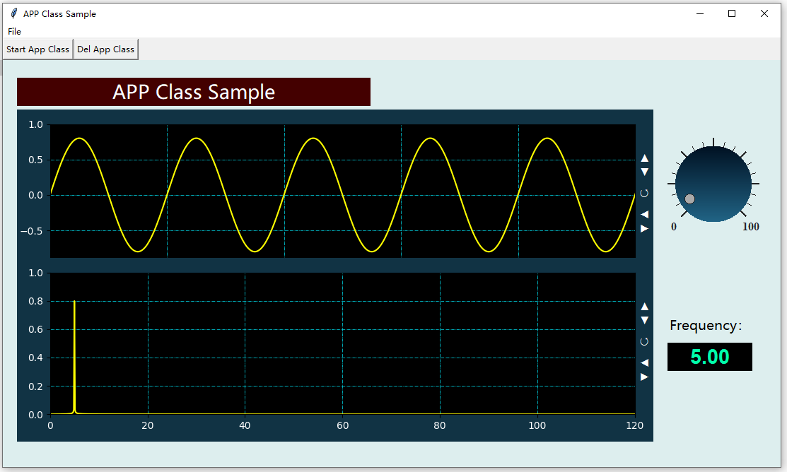

DRPython is an APP designer which is based on IDLE and Tkinter of Python. It is a little like Matlab's APP Designer. You can drag widgets to the layout area to fuifil a GUI design, and export it to a python frame program.
This is the python frame program that is exported by DRPython.
The frame program can run directly.
In the base of the frame program, you can design a program that can do some signal processing very quickly. Below is a APP of signal waveform and spectrum
Before to use DRPython, you need to intall some third packages for your python.
1) pip install numpy
2) pip install scipy
3) pip install matplotlib
4) pip install simpleaudio
5) pip install PyAudio
6) pip install Pyserial
And most important, to install drvi, a group of virtual instrument widget, which is a part of DRPython.
pip install drvi
.

Create a new GUI layout, and this operation will delete current layout !
Open a txt layout file, and this operation will delete current layout !
Save the current GUI design to a txt layout file.
Export the current GUI to a frame Python program. In the base of frame program, a real program can be finished very quickly by adding callback functions to widgets,
Export the current GUI in a proportional way to a frame Python program. In the base of frame program, a real program can be finished very quickly by adding callback functions to widgets,
Export the current GUI to a Python class that can be used as a block inside a python program. By adding callback functions for each widgets in the class, the class will work like a indivial applet int the program that call it.
Start the IDLE python editor to compile a python program.
Start a python command wind, which can execute python codes directly.
Close DRPython app designer.
To insert mode, you can add widgets by draging them from the right side.
To delete mode, you can delete a widgets by clicking on it.
Preview the current GUI layout in an APP working form.
Preview the current GUI layout in an APP codes form.
The best way to know DRPython is by what it has finished. So, some sample programs are given here. Through of them, you can know how to use DRPython and drvi package in signal processing APP design.
MIC recording
WAV playing
SineWave and Piano
Signal waveform and spectrum
Roles of Window function
Load and save signals
How to use APP Class
Python can only read audio file of WAV format. So, DRPython call ffmpeg in the background to turn a MP3 file into a WAV file. But you need to install ffmpeg and change the path to your ffmpeg path.
fPath=winDir+'\\ffmpeg511' ---like-> fpath='D:\\ffmpeg'
Get audio data from a MP4 file.
Check whether a MP3 file can play. If so, the DR.playX widget can be used in the APP to get audio data from a playing MP3 file.
Check whether a MP4 file can play. If so, the DR.playX widget can be used in the APP to get audio data from a playing MP4 file.
In most of times, the drvi package use a color code to set the color. You can select a color and get its color code. Link, Red='#ff0000'
List COM port aviable now. An serial widget is supplied in the drvi package, it can turn a cheap arduino card into a four channels A/D card.
.
Create a new GUI layout, and this operation will delete current layout !
Open a txt layout file, and this operation will delete current layout !
Save the current GUI design to a txt layout file.
Export the current GUI to a frame Python program. By adding callback functions for each widgets, a real program can be finished very quickly.
Export the current GUI in a proportional way to a frame Python program. By adding callback functions for each widgets, a real program can be finished very quickly.
Export the current GUI to a Python class that can be used as a block inside a python program. By adding callback functions for each widgets in the class, the class will work like a indivial applet int the program that call it.
Start the IDLE python editor to compile a python program.
To insert mode, you can add widgets by draging them from the right side.
To delete mode, you can delete a widgets by clicking on it.
In most of times, the drvi package use a color code to set the color. You can select a color and get its color code. Link, Red='#ff0000'
Preview the current GUI layout in an APP working form.
Preview the current GUI layout in an APP codes form.
Start a python command wind, which can execute python codes directly.
.
The property bar can be used to change title, position, background color and foreground color of a widget. As shown below.
.

The widget list can be used to select widgets you need. Select one by click on it, then drag it to where you wanted.
Right click on the selected widget, a help page will show and tell you how to use this widget.
5.1) Create a new layout file
5.2) Drag widgets to the layout area, then adjust their position,szie and color.
5.3) Save the design to a layout file for later use.
5.4) Export the GUI design to an APP frame or an APP class
5.5) Start IDLE python editor to edit the APP frame or an APP class that is generated by DRPython
A event driven and data driven architecture is includeed in the drvi package, which means a APP that is consist of drvi widgets and their callback functions can be driven by an event stream or a data stream.
For example, if we add the set method of a gauge to the output event of a knob. When we turn the knob, the value of gauge will change with it. And If we add a callback function to the output event of a knob, the callback function will be executed when the knob change. So the program is driven by the event driven
Below is a data driven example. When we start the WAV player widget, it will generate an audio data stream, and driven the callback function bind to it to work. So we can see the waveform and spectrum change with playing.
You pay most attenations on the callback function of signal processing and only a few addCallBack function is used to link event streams and data stream. Below is the main codes of WAV player. Only two sentences to fuiful event stream and data stream binding.
.
Six sample program are given out. From source codes of these programs, you can understand what is the drvi package, and can know how to use various virtual instrument widgets in the drvi package.
A program that show how to get audio data from MIC and to draw its waveform.
A program that show how to play WAV file and get audio data to do signal processing.
A program that show how to generate sine waves and play it like a piano.
A program that generate four typical signal, sine wave, square wave, sawtooth wave and white noise, and draw their waveform and spectrum.
A program that show roles of window function in FFT spectrum.
A program that show how to save signal to a numpy variable file and then load it back.
A program that show what is a APP class and how to use it inside a program.
.
2022/10/03 in HUST, China